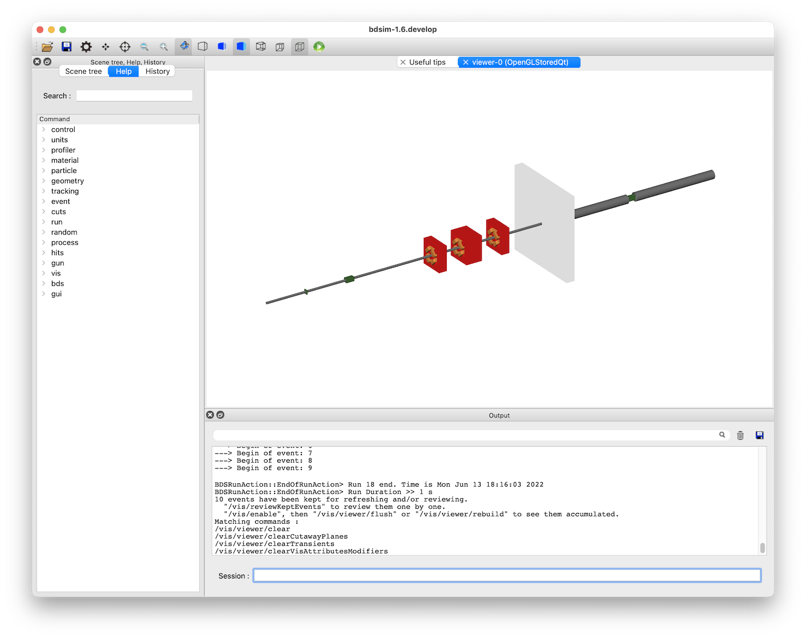
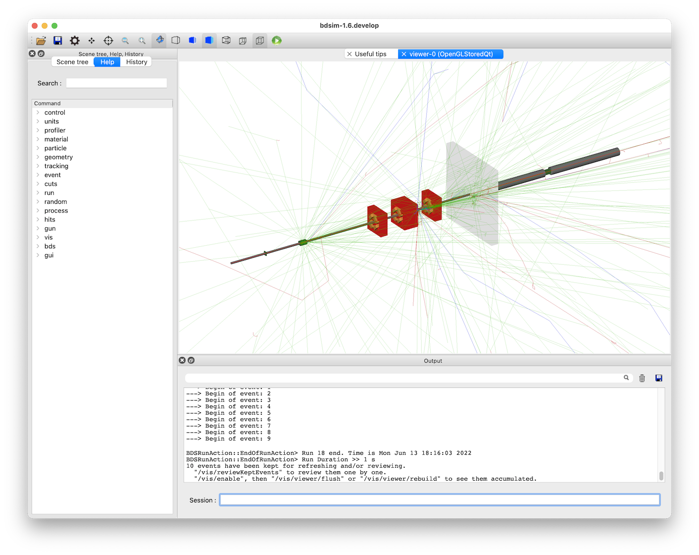
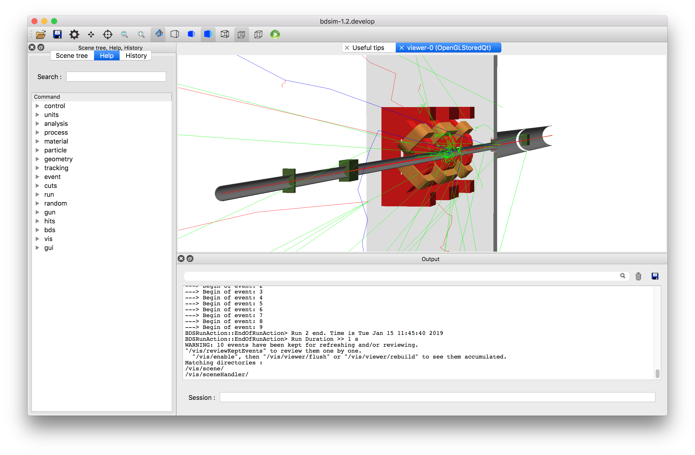
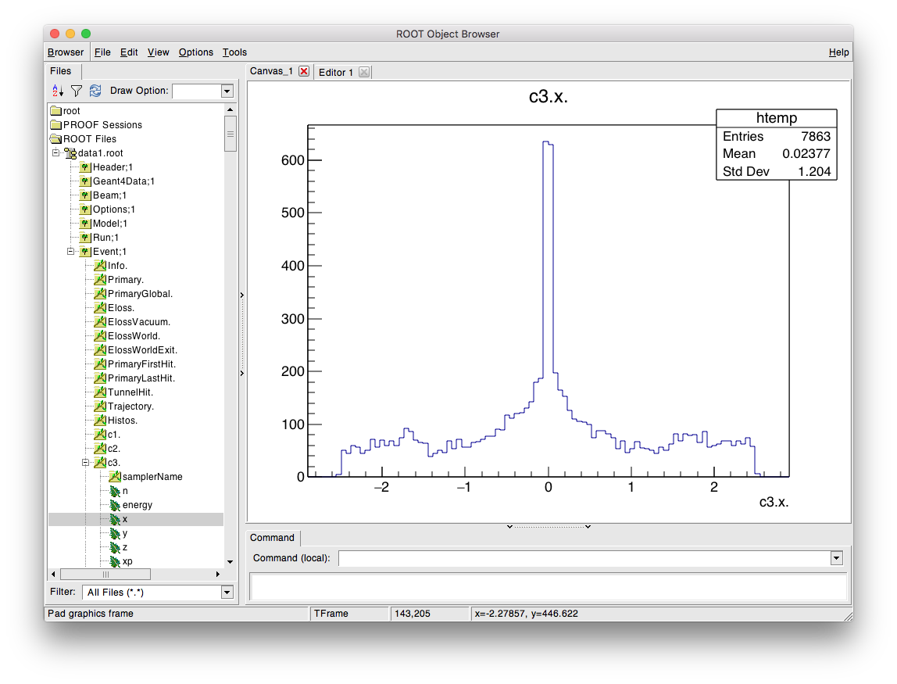
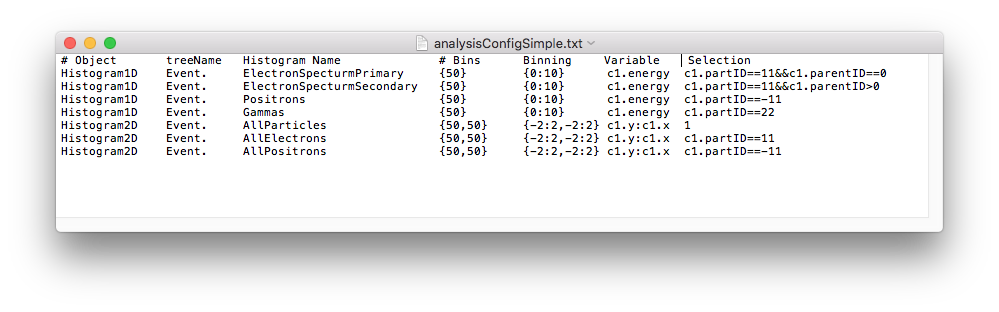
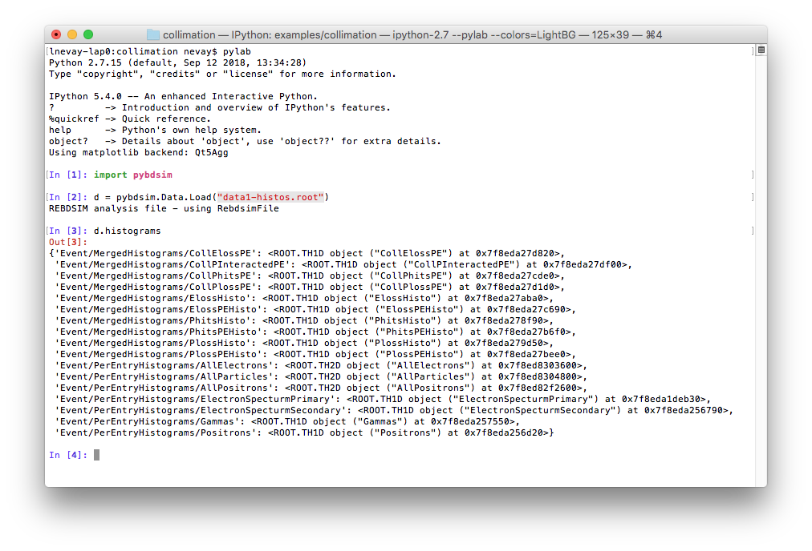

Collimation
Based on
bdsim/examples/collimation/collimation.gmad
This is an example to show how energy deposition and particle spectra from a small collimation system. There is a more detailed version of this example described in Collimation with detailed collimation-specific information.
The model consists of two collimators, followed by a triplet set of quadrupoles, a shielding wall and a third collimator. The collimators are made of successively denser material (carbon, copper and tungsten).
The first step is to prepare some data to analyse. 1000 events runs in
around 20s on the developer’s computer. The files can be found in
bdsim/examples/collimation. It can be run with the following command:
bdsim --file=collimation.gmad --outfile=data1 --batch --ngenerate=1000
This will create an output file called data1.root. We can run BDSIM with the visualisation to get an idea of what happens in the model. This time, we run without any data output.:
bdsim --file=collimation.gmad --output=none
The following window (with Geant4 setup with the Qt visualiser) should appear.
{kind=link}

If we type the following command in the terminal prompt at the bottom of this window, we can visualise 10 events.:
/run/beamOn 10
This looks like:
{kind=link}

The particles are colour coded by charge by default (positive: blue, negative: red, and neutral: green).
The following view was created by adding a ‘cut away plane’ that makes part of geometry on one side of a plane invisible. Also, the project was set from orthographic to perspective based using the button on the toolbar (see Control Buttons). The command for the cut away plane is:
/vis/viewer/addCutawayPlane 0 0 0 m 1 0 0
{kind=link}

We can take a look at the data with ROOT with the following command:
root -l data1.root
The “-l” flag means no logo (slightly quicker), and specifying a file along with the command means this file will come at the top of any browser windows in ROOT.
We start a TBrowser to inspect the data. The intention here is to inspect the data and decide which histograms we might want to prepare from it.:
root> TBrowser tb;
ROOT takes commands in C++, so here we construct an ‘instance’ of the TBrowser class called “tb” (can be any name). The TBrowser brings up a window that allows graphical exploration of the data. This looks like:
{kind=link}

The most interesting information is the in the Event tree. Double-click on this to expand it and look at the variables. A full explanation of the output here is described in Event Tree. This browser is most useful to get the exact names to prepare the analysis configuration text file that’s used for analysis.
To produce histograms, we prepare an input text file that describes which histograms
we want to prepare. This file is described in detail in
Preparing an Analysis Configuration File.
Typically we start by copying an example from
bdsim/examples/features/analysis/perEntryHistograms/analysisConfig.txt.
Below is an example analysis configuration called analysisConfigSimple.txt that is
included in the same example directory.
{kind=link}

The data can be analysed with the following command:
rebdsim analysisConfigSimple.txt data1.root data1-histos.root
This will produce an output file called data1-histos.root that contains
the requested histograms as well as a merged copy of any pre-made histograms
in the data file (such as energy deposition).
If we start another ROOT session, or click the refresh button (top left, near “Draw Option”, looks like a recycle symbol), the file view will refresh and we can browse the new output file and view the histograms in ROOT. We can also load the histograms in Python using the pybdsim utility package and make some nicer plots.:
ipython
>>> import pybdsim
>>> d = pybdsim.Data.Load("data1-histos.root")
>>> d.histograms
This is described in the manual for pybdsim (see Python Utilities) and the relevant section is http://www.pp.rhul.ac.uk/bdsim/pybdsim/data.html. This is what should be seen:
{kind=link}

The following commands can be used to make a few simple plots in Python:
>>> pybdsim.Plot.EnergyDeposition("data1-histos.root")
>>> pybdsim.Plot.LossAndEnergyDeposition("data1-histos.root")
>>> d.histograms2dpy
{'Event/PerEntryHistograms/AllElectrons': <pybdsim.Data.TH2 at 0x11e8f9590>,
'Event/PerEntryHistograms/AllParticles': <pybdsim.Data.TH2 at 0x11e8f95d0>,
'Event/PerEntryHistograms/AllPositrons': <pybdsim.Data.TH2 at 0x11e8f9550>}
>>> pybdsim.Plot.Histogram2D(d.histograms2dpy['Event/PerEntryHistograms/AllParticles'], logNorm=True)
We leave it to the user to create their own plots, but the basic data exploration is provided and the user should consult the pybdsim source code (see pybdsim/pybdsim/Plot.py) for how we have made these plots using matplotlib.
The above commands create the following plots.